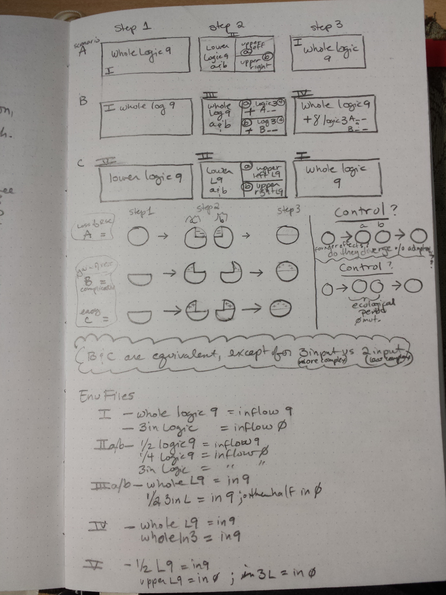
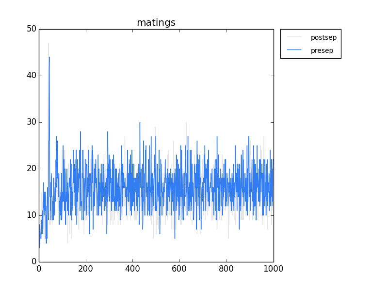
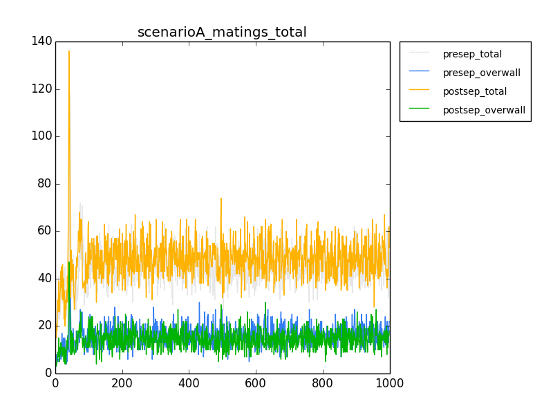
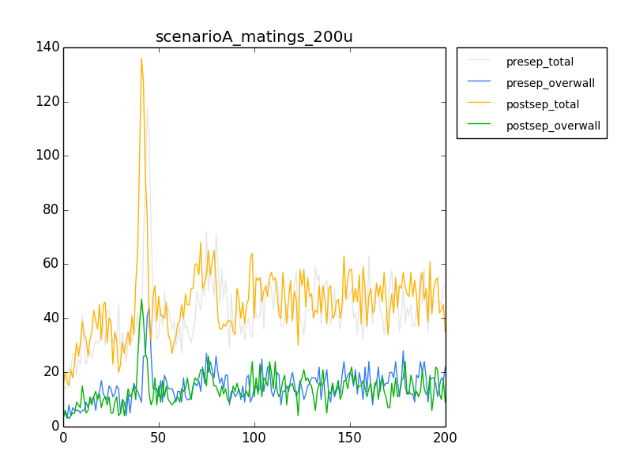
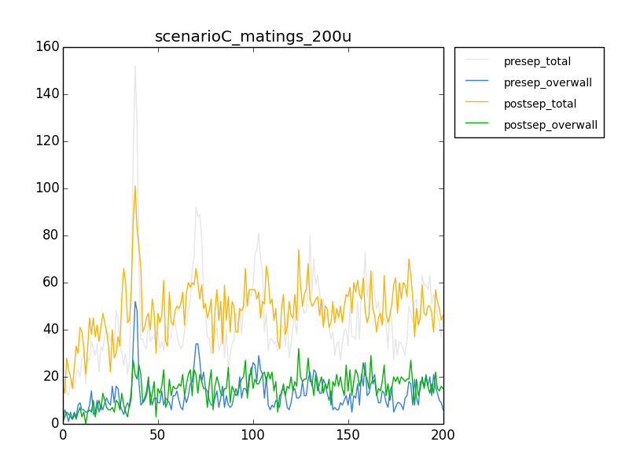
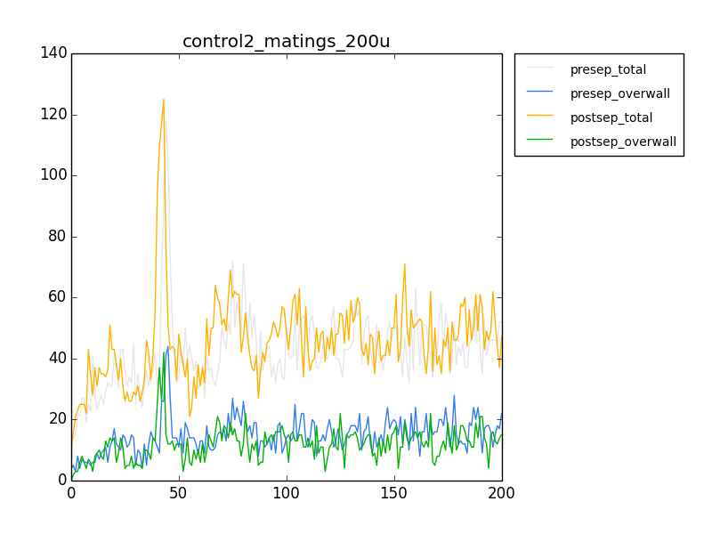
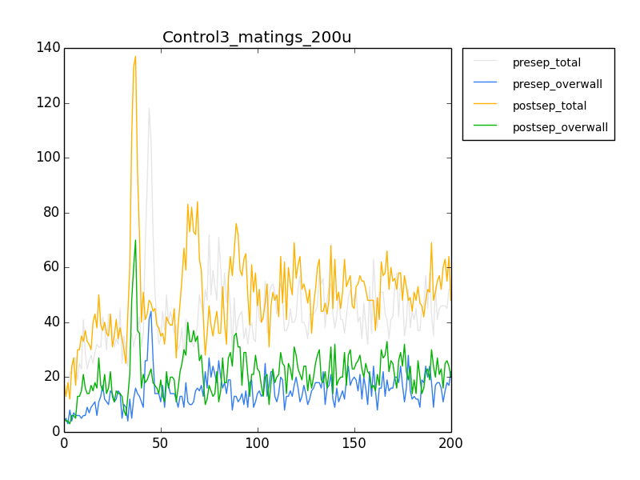
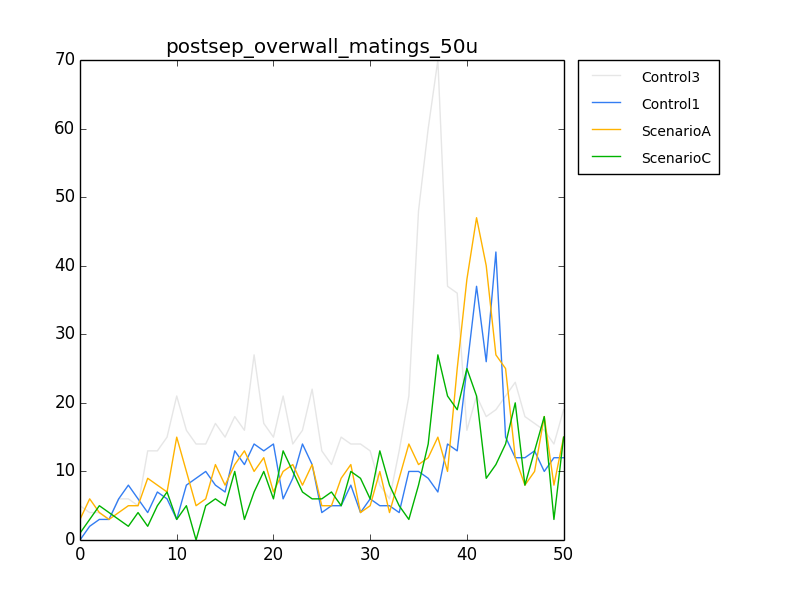

Ok, so I've generated the data.
rosiec@13-67-42:~/Dropbox/School_Docs/Research/AvidaDev/avida_dev_sexual_selection_testing/experimental_setup/data3_wholelogic9/mates$ awk '{if (($16 > 0) && (($11 > 1799 && $22 < 1800) || ($11 < 1800 && $22 > 1799))) print $2,$3,$4,$5,$8,$11,"--->",$13,$14,$15, $16,$19,$22}' mates-1000.dat
This snippet reads the raw matings and identifies those between groups that are choosy but still cross borders.
The output shows 11 matings, out of 55 (as counted by the mating output. What's weird, though, is that this is 1000 updates later. WTF. The raw is not supposed to work like that.
Ok, I changed the output to dump the successful matings at every update. Then, I combined the output, and ran it through awk to pull the relevant lines. It's not looking good.
rosiec@13-67-42:~/Dropbox/School_Docs/Research/AvidaDev/avida_dev_sexual_selection_testing/experimental_setup/data3_wholelogic9/mates$ awk '{if (($16 > 0) && (($11 > 1799 && $22 < 1800) || ($11 < 1800 && $22 > 1799))) print $2,$3,$4,$5,$8,$11,"--->",$13,$14,$15, $16,$19,$22}' mates-all.dat | wc -l 14964 rosiec@13-67-42:~/Dropbox/School_Docs/Research/AvidaDev/avida_dev_sexual_selection_testing/experimental_setup/data3_wholelogic9/mates$ cat mates-all.dat | wc -l 39801
This means about half the matings are happening across the border. :/
rosiec@13-67-42:~/Dropbox/School_Docs/Research/AvidaDev/avida_dev_sexual_selection_testing/experimental_setup/data3_wholelogic9/mates$ for i in {1..9}; do ia=$((i * 100)); ia2=$((ia - 1)); k=$((ia2)); j=$((ia + 101)); echo $k $j; awk -v i="$k" -v j="$j" '{if (($13 > i && $13 < j)) print $2,$3,$4,$5,$8,$11,"--->",$13,$14,$15, $16,$19,$22}' mates-all.dat | wc -l; done
rosiec@13-67-42:~/Dropbox/School_Docs/Research/AvidaDev/avida_dev_sexual_selection_testing/experimental_setup/data3_wholelogic9/mates$ for i in {1..9}; do ia=$((i * 100)); ia2=$((ia - 1)); k=$((ia2)); j=$((ia + 101)); echo $k $j; awk -v i="$k" -v j="$j" '{if (($13 > i && $13 < j) && ($16 > 0) && (($11 > 1799 && $22 < 1800) || ($11 < 1800 && $22 > 1799))) print $2,$3,$4,$5,$8,$11,"--->",$13,$14,$15, $16,$19,$22}' mates-all.dat | wc -l; done
The above prints out a time-series by 100 updates of the matings. There doesn't seem to be a pattern over time. Just a steady distribution of about half the matings being across the border.
One thing I noticed, though, is that many choosy females are mating with non-choosy males that are expressing display traits... is this intended behavior?
rosiec@13-67-42:~/Dropbox/School_Docs/Research/AvidaDev/avida_dev_sexual_selection_testing/experimental_setup/data3_wholelogic9/mates$ awk '{if ((($16 > 0) && ($5 < 1)) && (($11 > 1799 && $22 < 1800) || ($11 < 1800 && $22 > 1799))) print $2,$3,$4,$5,$8,$11,"--->",$13,$14,$15, $16,$19,$22}' mates-all.dat | wc -l 3507 rosiec@13-67-42:~/Dropbox/School_Docs/Research/AvidaDev/avida_dev_sexual_selection_testing/experimental_setup/data3_wholelogic9/mates$ awk '{if ((($16 > 0) && ($5 > 0)) && (($11 > 1799 && $22 < 1800) || ($11 < 1800 && $22 > 1799))) print $2,$3,$4,$5,$8,$11,"--->",$13,$14,$15, $16,$19,$22}' mates-all.dat | wc -l 11457 rosiec@13-67-42:~/Dropbox/School_Docs/Research/AvidaDev/avida_dev_sexual_selection_testing/experimental_setup/data3_wholelogic9/mates$ awk '{if (($16 > 0) && (($11 > 1799 && $22 < 1800) || ($11 < 1800 && $22 > 1799))) print $2,$3,$4,$5,$8,$11,"--->",$13,$14,$15, $16,$19,$22}' mates-all.dat | wc -l 14964
First output: Choosy females mating with non-choosy males over the wall. Second: Choosy mating with choosy, over the wall. Third: The total mating over the wall.
After napping over it, I realize I need some controls, because I can't know what to expect here. I'll post a picture of my notebook in a minute, wherein I describe my experimental regime. I think maybe the second phase of separated evolution going longer might not be a bad thing.
Biological controls. Measure the mating rate of the population prior to allopatry (splitting the populations) for each of the runs.
Mention to Cliff about the linkage of the preference trait to the sex trait being important in adoption of the preference trait, or easing of loss.
----> schedule paper reading as part of my research time.

Scenario A:
Event: I, IIa, IIb, III Joined, Allopatry, Rejoined
Env: I, IIa, IIb, I WL9, L9SplitTree, WL9
./avida -set EVENT_FILE events_I.cfg -set ENVIRONMENT_FILE environment_I_*.cfg -set DATA_DIR data__A_step1; \ cp data__A_step1/detail-100000.spop ./detail-final.spop; \ ./avida -set EVENT_FILE events_IIa.cfg -set ENVIRONMENT_FILE environment_IIa_*.cfg -set DATA_DIR data__A_step2a; \ ./avida -set EVENT_FILE events_IIb.cfg -set ENVIRONMENT_FILE environment_IIb_*.cfg -set DATA_DIR data__A_step2b; \ cat data__A_step2a/detail-100000.spop > detail-combined.spop; \ tail -n +24 data__A_step2b/detail-100000.spop >> detail-combined.spop; \ ./avida -set EVENT_FILE events_III.cfg -set ENVIRONMENT_FILE environment_I_*.cfg -set DATA_DIR data__A_step3; \ cp data__A_step1/detail-100000.spop detail-combined.spop; \ ./avida -set EVENT_FILE events_III.cfg -set ENVIRONMENT_FILE environment_I_*.cfg -set DATA_DIR data__A_step4;
Scenario B:
Event: I, IIa, IIb, III Joined, Allopatry, Rejoined
Env: I, IIIa, IIIb, IV WL9, WL9+3LSplitTree, WL9+W3L
./avida -set EVENT_FILE events_I.cfg -set ENVIRONMENT_FILE environment_I_*.cfg -set DATA_DIR data__B_step1; \ cp data__B_step1/detail-100000.spop ./detail-final.spop; \ ./avida -set EVENT_FILE events_IIa.cfg -set ENVIRONMENT_FILE environment_IIIa_*.cfg -set DATA_DIR data__B_step2a; \ ./avida -set EVENT_FILE events_IIb.cfg -set ENVIRONMENT_FILE environment_IIIb_*.cfg -set DATA_DIR data__B_step2b; \ cat data__B_step2a/detail-100000.spop > detail-combined.spop; \ tail -n +24 data__B_step2b/detail-100000.spop >> detail-combined.spop; \ ./avida -set EVENT_FILE events_III.cfg -set ENVIRONMENT_FILE environment_IV_*.cfg -set DATA_DIR data__B_step3; \ cp data__B_step1/detail-100000.spop detail-combined.spop; \ ./avida -set EVENT_FILE events_III.cfg -set ENVIRONMENT_FILE environment_I_*.cfg -set DATA_DIR data__B_step4;
Scenario C:
Event: I, IIa, IIb, III Joined, Allopatry, Rejoined
Env: V, IIa, IIb, I LowerL9, L9SplitTree, WL9
./avida -set EVENT_FILE events_I.cfg -set ENVIRONMENT_FILE environment_V_*.cfg -set DATA_DIR data__C_step1; \ cp data__C_step1/detail-100000.spop ./detail-final.spop; \ ./avida -set EVENT_FILE events_IIa.cfg -set ENVIRONMENT_FILE environment_IIa_*.cfg -set DATA_DIR data__C_step2a; \ ./avida -set EVENT_FILE events_IIb.cfg -set ENVIRONMENT_FILE environment_IIb_*.cfg -set DATA_DIR data__C_step2b; \ cat data__C_step2a/detail-100000.spop > detail-combined.spop; \ tail -n +24 data__C_step2b/detail-100000.spop >> detail-combined.spop; \ ./avida -set EVENT_FILE events_III.cfg -set ENVIRONMENT_FILE environment_I_*.cfg -set DATA_DIR data__C_step3; \ cp data__C_step1/detail-100000.spop detail-combined.spop; \ ./avida -set EVENT_FILE events_III.cfg -set ENVIRONMENT_FILE environment_V_*.cfg -set DATA_DIR data__C_step4;
Control 1 - Same Env:
Event: I, IIa, IIb, III Joined, Allopatry, Rejoined
Env: I, I, I, I WL9, WL9, WL9
./avida -set EVENT_FILE events_I.cfg -set ENVIRONMENT_FILE environment_I_*.cfg -set DATA_DIR data__Control1_step1; \ cp data__Control1_step1/detail-100000.spop ./detail-final.spop; \ ./avida -set EVENT_FILE events_IIa.cfg -set ENVIRONMENT_FILE environment_I_*.cfg -set DATA_DIR data__Control1_step2a; \ ./avida -set EVENT_FILE events_IIb.cfg -set ENVIRONMENT_FILE environment_I_*.cfg -set DATA_DIR data__Control1_step2b; \ cat data__Control1_step2a/detail-100000.spop > detail-combined.spop; \ tail -n +24 data__Control1_step2b/detail-100000.spop >> detail-combined.spop; \ ./avida -set EVENT_FILE events_III.cfg -set ENVIRONMENT_FILE environment_I_*.cfg -set DATA_DIR data__Control1_step3; \ cp data__Control1_step1/detail-100000.spop detail-combined.spop; \ ./avida -set EVENT_FILE events_III.cfg -set ENVIRONMENT_FILE environment_I_*.cfg -set DATA_DIR data__Control1_step4;
Control 2 - Same Env:
Event: I, IVa, IVb, III Joined, Allopatry (no mut), Rejoined
Env: I, I, I, I WL9, WL9, WL9
./avida -set EVENT_FILE events_I.cfg -set ENVIRONMENT_FILE environment_I_*.cfg -set DATA_DIR data__Control2_step1; \ cp data__Control2_step1/detail-100000.spop ./detail-final.spop; \ ./avida -set EVENT_FILE events_IVa.cfg -set ENVIRONMENT_FILE environment_I_*.cfg -set DATA_DIR data__Control2_step2a; \ ./avida -set EVENT_FILE events_IVb.cfg -set ENVIRONMENT_FILE environment_I_*.cfg -set DATA_DIR data__Control2_step2b; \ cat data__Control2_step2a/detail-100000.spop > detail-combined.spop; \ tail -n +24 data__Control2_step2b/detail-100000.spop >> detail-combined.spop; \ ./avida -set EVENT_FILE events_III.cfg -set ENVIRONMENT_FILE environment_I_*.cfg -set DATA_DIR data__Control2_step3; \ cp data__Control2_step1/detail-100000.spop detail-combined.spop; \ ./avida -set EVENT_FILE events_III.cfg -set ENVIRONMENT_FILE environment_I_*.cfg -set DATA_DIR data__Control2_step4;
Control 3 - Same Env:
Event: I, V, III Joined, Still Joined, Rejoined
Env: I, I, I WL9, WL9, WL9
./avida -set EVENT_FILE events_I.cfg -set ENVIRONMENT_FILE environment_I_*.cfg -set DATA_DIR data__Control3_step1; \ cp data__Control3_step1/detail-100000.spop ./detail-final.spop; \ ./avida -set EVENT_FILE events_V.cfg -set ENVIRONMENT_FILE environment_I_*.cfg -set DATA_DIR data__Control3_step2; \ cat data__Control3_step2/detail-100000.spop > detail-combined.spop; \ ./avida -set EVENT_FILE events_III.cfg -set ENVIRONMENT_FILE environment_I_*.cfg -set DATA_DIR data__Control3_step3; \ cp data__Control3_step1/detail-100000.spop detail-combined.spop; \ ./avida -set EVENT_FILE events_III.cfg -set ENVIRONMENT_FILE environment_I_*.cfg -set DATA_DIR data__Control3_step4;
rosiec@Weir:~/Dropbox/School_Docs/Research/AvidaDev/avida_dev_sexual_selection_testing/experimental_setup$ cp data__A_step1/detail-100000.spop detail-combined.spop; ./avida -set EVENT_FILE events_III.cfg -set ENVIRONMENT_FILE environment_I_*.cfg -set DATA_DIR data__A_step4; rosiec@Weir:~/Dropbox/School_Docs/Research/AvidaDev/avida_dev_sexual_selection_testing/experimental_setup/data__A_step4/mates$ rm matings_timeseries.dat; for i in {0..999}; do echo $i; awk -v i="$i" '{if (($13 == i) && ($16 > 0) && (($11 > 1799 && $22 < 1800) || ($11 < 1800 && $22 > 1799))) print $2,$3,$4,$5,$8,$11,"--->",$13,$14,$15, $16,$19,$22}' mates-$i".dat" | wc -l >> matings_timeseries.dat ; done; rosiec@13-67-42:~/Dropbox/School_Docs/Research/AvidaDev/avida_dev_sexual_selection_testing/experimental_setup/data__A_step3/mates$ rm matings_timeseries.dat; for i in {0..999}; do awk -v i="$i" '{if (($13 == i) && ($16 > 0) && (($11 > 1799 && $22 < 1800) || ($11 < 1800 && $22 > 1799))) print $2,$3,$4,$5,$8,$11,"--->",$13,$14,$15, $16,$19,$22}' mates-$i".dat" | wc -l >> matings_timeseries.dat ; done; rosiec@13-67-42:~/Dropbox/School_Docs/Research/AvidaDev/avida_dev_sexual_selection_testing/experimental_setup$ python ../../../research_scripts/quickplot.py scenarioA_matings matings_timeseries.dat 1 data__A_step3/mates/ postsep matings_timeseries.dat 1 data__A_step4/mates/ presep

rosiec@13-67-42:~/Dropbox/School_Docs/Research/AvidaDev/avida_dev_sexual_selection_testing/experimental_setup/data__A_step3/mates$ rm total_matings_perupdate.dat; for i in {0..999}; do cat mates-$i".dat" | wc -l >> total_matings_perupdate.dat; done rosiec@13-67-42:~/Dropbox/School_Docs/Research/AvidaDev/avida_dev_sexual_selection_testing/experimental_setup/data__A_step4/mates$ rm total_matings_perupdate.dat; for i in {0..999}; do cat mates-$i".dat" | wc -l >> total_matings_perupdate.dat; done
rosiec@13-67-42:~/Dropbox/School_Docs/Research/AvidaDev/avida_dev_sexual_selection_testing/experimental_setup$ python ../../../research_scripts/quickplot.py scenarioA_matings_total \ total_matings_perupdate.dat 1 data__A_step4/mates/ presep_total \ matings_timeseries.dat 1 data__A_step4/mates/ presep_overwall \ total_matings_perupdate.dat 1 data__A_step3/mates/ postsep_total \ matings_timeseries.dat 1 data__A_step3/mates/ postsep_overwall rosiec@13-67-42:~/Dropbox/School_Docs/Research/AvidaDev/avida_dev_sexual_selection_testing/experimental_setup$ python ../../../research_scripts/quickplot.py --end_at=200 scenarioA_matings_200u total_matings_perupdate.dat 1 data__A_step4/mates/ presep_total matings_timeseries.dat 1 data__A_step4/mates/ presep_overwall total_matings_perupdate.dat 1 data__A_step3/mates/ postsep_total matings_timeseries.dat 1 data__A_step3/mates/ postsep_overwall

Yeah, so no discernible effect preventing them from mating.
Rearranged some things so my runs are actually correct. :/
Then, as below, linked everything so there's no file duplication, but I can have separate run directories. This is so I can do my runs concurrently. It may run slightly slower, but still way faster than running them serially.
rosiec@Weir:~/Dropbox/School_Docs/Research/AvidaDev/avida_dev_sexual_selection_testing/experimental_setup/ScenarioB$ for i in ../*.cfg; do ln -s $i ./; done; for i in ../*.org; do ln -s $i ./; done; ln -s ../avida ./
-Scenario B isn't finished. So... waiting to generate that data.
Had a look at my data. I'm seeing a series of weird thigns that I don't understand.

Not a lot of differences.
Things I learned:
- mating before and after is a bad strategy for controls, because the mating rate changes over time, generally toward the MORE MATING, so any difference could be washed out by mating more overall at later time points.
- there is probably something wrong because I'm seeing matings at update 0, which makes ZERO sense. The content of the birth chamber should be EMPTY at this time point. Baffled.

Here's the money shot. This is the measure of post-allopatry over-the-wall mating before 50 updates. Control 3 is the relevant one because it treats things as if they were never separated. Control 1 is really a treatment, for allopatry in identical environments. Scenario A is loss of resources (loss of adaptation), Scenario B is gain of new resources (new adaptation).
Compared to the control